雪媚娘源自日本，原名为“大福”，是日本 的地道点心之一，外皮是QQ的雪媚娘冰皮，在日本它的馅料都是当季的真材实料的水果为主。
“雪媚娘”这个名字源于日本当地发明各种草莓大福的一位夫人，而我们制作的雪媚娘也是她的代表作之一。
雪媚娘细白软糯，第一口咬到的是特别Q滑的冰皮，里面是奶香怡人的淡奶油，裹着好吃的水果粒， 酸酸甜甜、口感丰富。
“雪媚娘”冷藏后的口感更佳，轻轻一口下去，细软中还带着隐隐的甜意和凉意。西茄雪媚娘，沿用轻施手粉风格，内馅采用鲜果，是传统雪媚娘的最重要流派。
| 糯米粉 | 100克 |
| 牛奶 | 180克 |
| 糖 | 70克 |
| 玉米淀粉 | 60克 |
| 黄油 | 50克 |
| 黄油 | 50克 |
| 淡奶油 | 200克 |
| 糖 | 20克 |
| 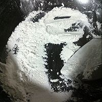 | 先随意抓点糯米粉出来，炒熟，做手粉 |
| 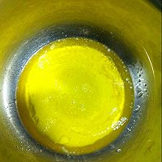 | 黄油提前溶化成液体 |
| 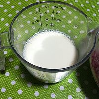 | 牛奶称出来 |
| 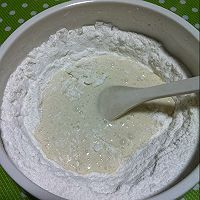 | 糯米粉+玉米淀粉+糖 拌匀，慢慢倒入牛奶 |
| 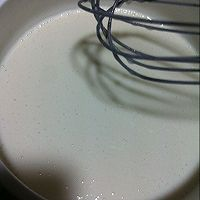 | 用打蛋器拌匀至无颗粒 |
| 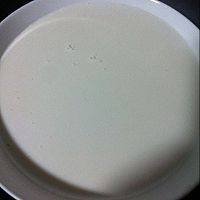 | 入锅里中火蒸20分钟 |
| 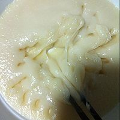 | 20分钟后拔开来看一下，有没有液体，没有，颜色均匀就熟了 |
| 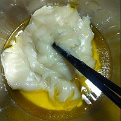 | 把蒸熟的面团倒入黄油里，戴上手套揉 |
| 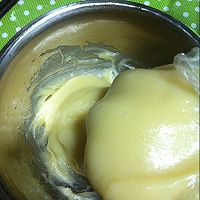 | 揉完的样子，冷了后，放冰箱冷藏半小时 |
| 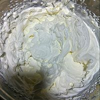 | 这时就开始打奶油，稍硬点，好定型 |
| 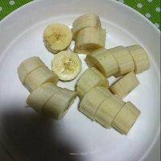 | 切香蕉 |
| 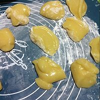 | 半小时后取出，这个方子可以做10个的量，取出我面团是378克，我分成37.8克一个 |
| 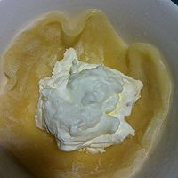 | 拿个小碗，撒上粉，倒出，把皮放进去，放上奶油 |
| 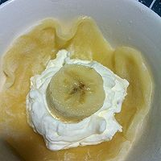 | 放上香蕉，抓起来就可以了，捏紧哦 |
| 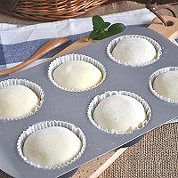 | 成品 |